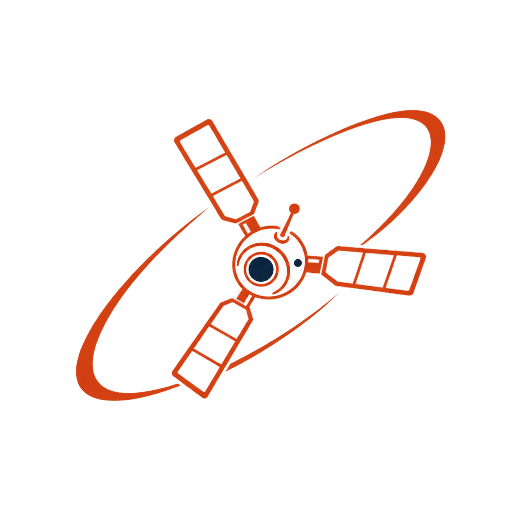
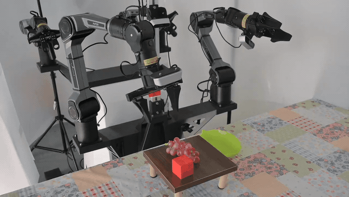
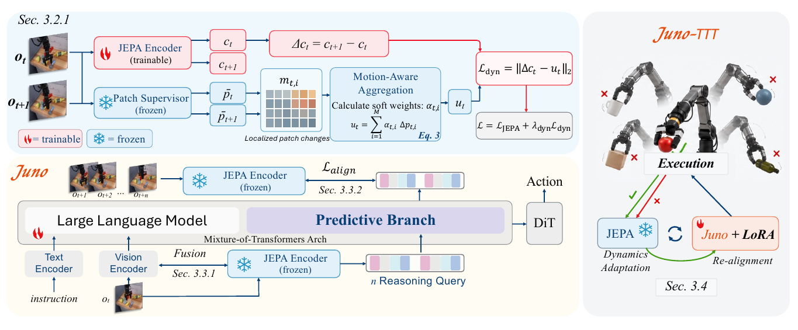
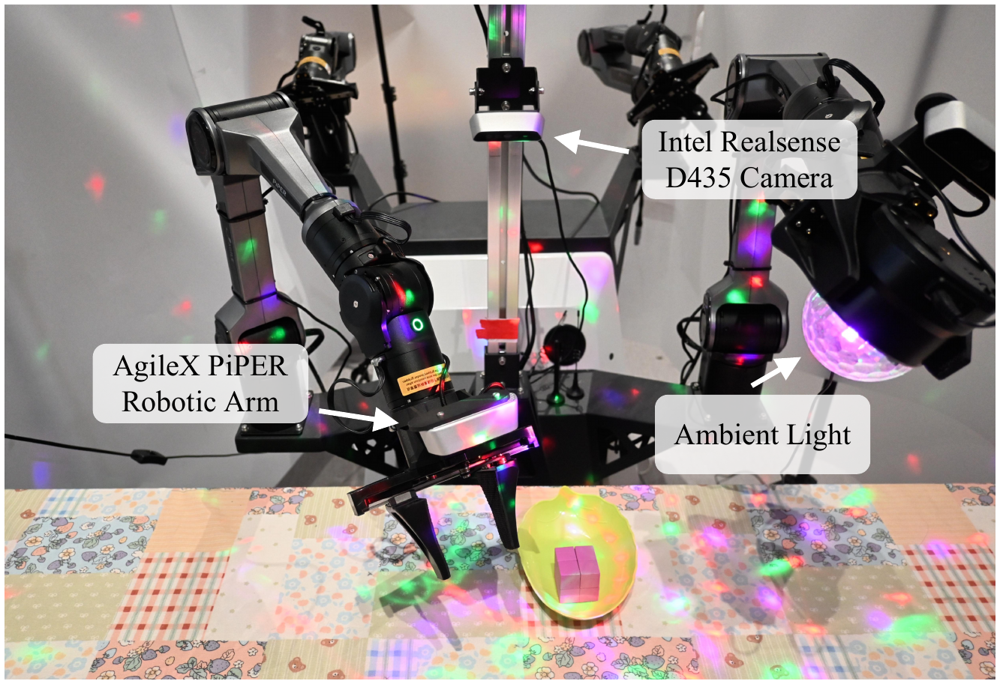
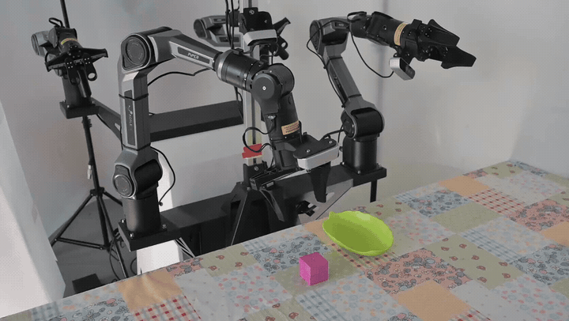
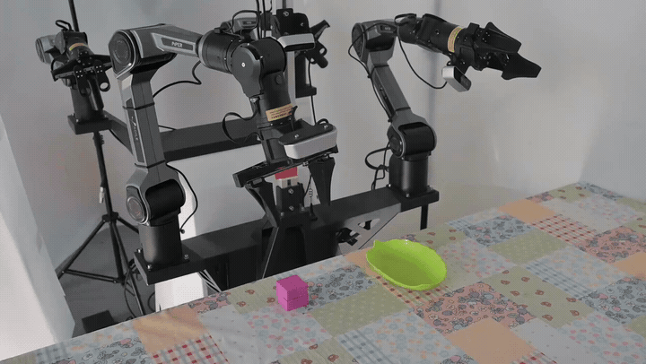
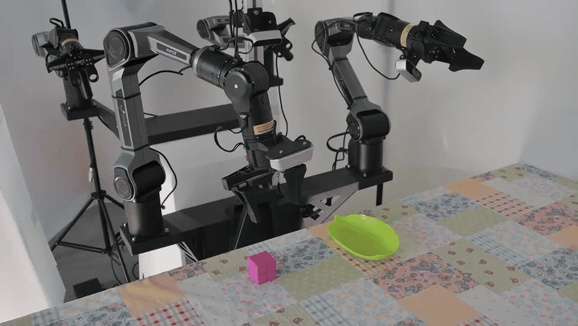
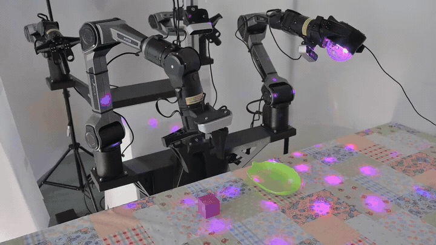

Control-aligned
pretraining
Match the JEPA to embodiment-specific motion, then make the global state respond to local interaction.
↘Vision-Language-Action Models

JunoTaming Predictive Latents1 University of Science and Technology of China 2 Eastern Institute of Technology, Ningbo
3 Hangzhou Dianzi University 4 ShanghaiTech University

Predictive latents are only useful when they stay tied to the control problem.
Joint-embedding predictive architectures (JEPAs) predict masked or future observations in representation space, offering a natural source of predictive latents for vision-language-action (VLA) models. Yet making these latents useful across pretraining, policy learning, and deployment requires addressing three failures: mismatch with embodiment-specific control, interference with action learning, and teacher miscalibration under distribution shifts. We introduce Juno, a unified framework built around one action-conditioned JEPA that serves as a control-aligned representation backbone, a predictive teacher, and an adaptable dynamics model. During pretraining, we train it on embodiment-matched trajectories and use a dynamic CLS loss to transfer motion-weighted patch dynamics to a compact global state. During policy learning, we fuse current-frame JEPA patches into VLA perception and use a decoupled reasoning branch with separate transformation parameters to distill future latent states for action generation. During deployment, we adapt the world model on all observed transitions, including failed rollouts, freeze the adapted teacher, and re-align the policy on verified executions using LoRA adapters and a trainable action head, without expert corrections or task rewards. On SimplerEnv, Juno raises average success from 60.9% to 68.5% over Qwen3GR00T, the strongest baseline, and test-time adaptation further reaches 72.7%; on a real robot, it retains 70%–75% success under background, height, and object shifts where the base policy collapses to 0%.
Juno follows a single predictive representation from learning the world to acting in it.
Match the JEPA to embodiment-specific motion, then make the global state respond to local interaction.
↘Fuse current-frame patches and distill future latent states in a branch that still drives actions.
↘Use every transition to adapt dynamics; trust verified executions when updating the policy.
↘The predictive branch is trained to be action-decodable, not merely visually predictive.

Dynamic CLS. Motion-weighted patch changes supervise the compact state token.
Mixture-of-transformers branch. Future queries share causal attention while keeping separate transforms.
Failure-aware TTT. Failed actions still reveal consequences, so they remain useful for dynamics adaptation.
Reported paper results across simulation, real-robot transfer, and deployment adaptation.
| Condition | Qwen3GR00T | Juno |
|---|---|---|
| In-domain | 40% | 100% |
| Background shift | 0% | 75% |
| + Height shift | 0% | 70% |
| + Object shift | 0% | 70% |

Frozen-policy rollouts over one in-domain and three cumulative out-of-distribution conditions, accelerated to 1.5× and shown as looping GIFs.
 Juno · 100%
Juno · 100%
Juno · 75% Juno · 70%
Juno · 70%World-model adaptation uses every transition; policy re-alignment uses verified executions only.

Frozen · 40%
Juno-TTT · 65%
Frozen · 55% Juno-TTT · 70%
Juno-TTT · 70%@misc{zhu2026junotamingpredictivelatents,
title={Juno: Taming Predictive Latents for Vision-Language-Action Models},
author={Yuchen Zhu and Chenyi Xu and Yulin Zhang and Gang Xu and Wentao Zhu},
year={2026},
eprint={2610.09940},
archivePrefix={arXiv},
primaryClass={cs.RO},
url={https://arxiv.org/abs/2610.09940},
}